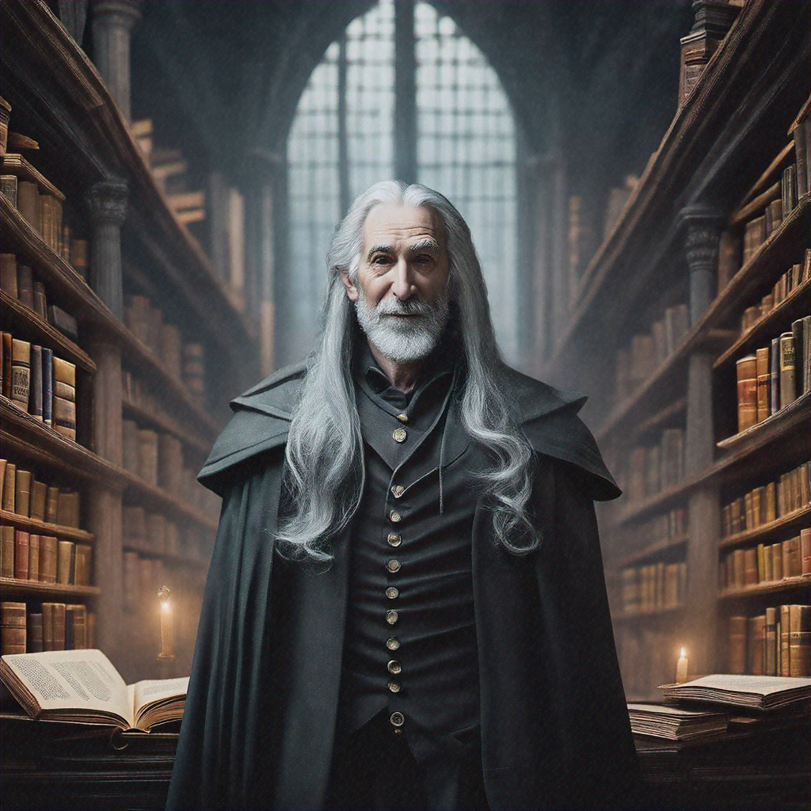

Chapter 2: The Guardian
Elena stepped cautiously into the impossible library, her footsteps muffled by what appeared to be clouds drifting across the floor. The air shimmered with golden dust motes that sparkled like tiny stars..
The voice seemed to come from everywhere and nowhere at once. Elena spun around, her heart racing, but saw only the endless rows of floating books.
"Who's there?" she called out, surprised by how steady her voice sounded.
A figure materialized from between the shelves—tall, ethereal, with silver hair that moved as if underwater and eyes that held the depth of centuries.

"I am Theron, Guardian of the Eternal Library," the figure said, his voice carrying the weight of ages. "You have found your way to the space between worlds, where all knowledge that ever was or ever will be is preserved."
Elena's academic mind raced. "This is impossible. Libraries don't exist between worlds. Magic isn't real."
Theron's laughter was like wind chimes in a gentle breeze. "Your world has forgotten much, young scholar. But you... you still remember how to see."
He gestured to the floating books around them. "Every story ever told, every secret ever whispered, every truth ever discovered—all of it lives here. But knowledge without wisdom is dangerous."
The scene around them shifted, revealing deeper chambers filled with books that pulsed with different colored lights—some warm and golden, others cold and blue, and a few that flickered with an ominous red glow.
"The red ones," Elena whispered, drawn to their forbidden allure.
"Contain knowledge that destroyed civilizations," Theron warned. "Power without understanding. Secrets that should remain buried."
A distant bell tolled, its sound carrying an unmistakable note of warning.
"But you didn't come here by accident, Elena Vasquez. The Library calls only to those who are meant to find it. The question is: what will you do with what you discover?"
End of Chapter 2
Next: Chapter 3: The Choice